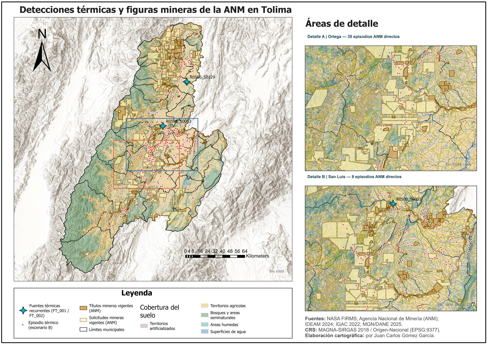
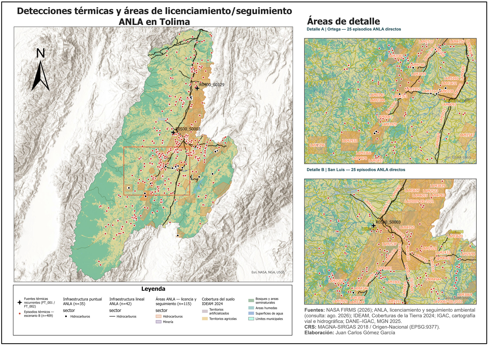
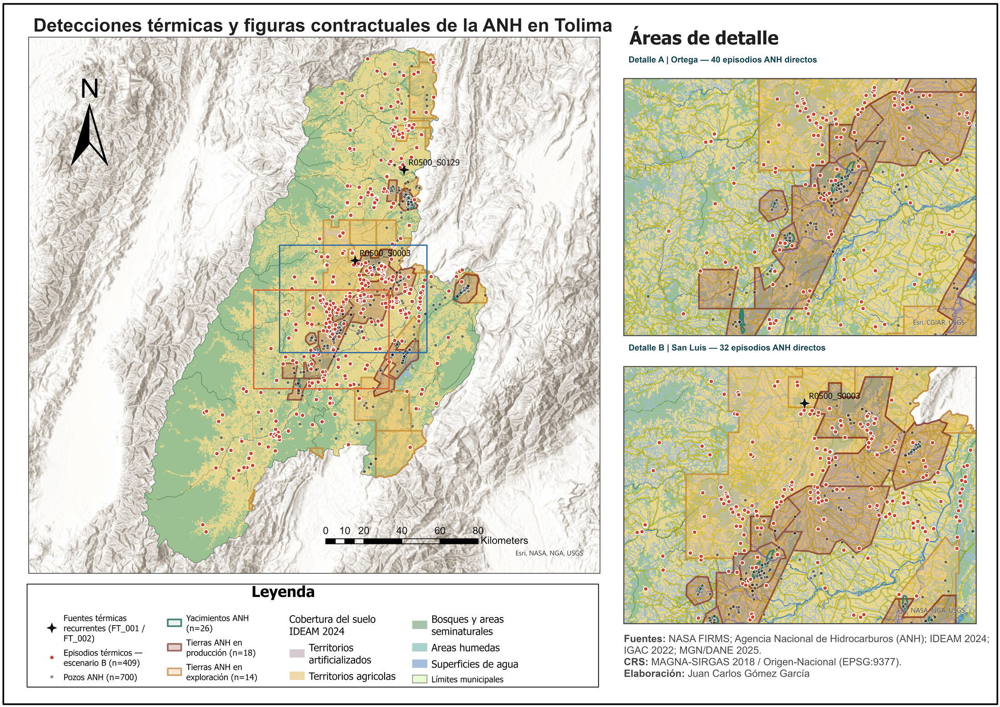

Atlas analítico · Tolima · agosto de 2026
Detecciones térmicas y zonas de posible intervención extractiva
Este sitio presenta un análisis espacial de 409 episodios térmicos registrados en Tolima durante agosto de 2026 y su relación espacial con información institucional de minería, licenciamiento ambiental e hidrocarburos. En cada sección puede ampliar el mapa para explorar el departamento completo y acceder a su versión A0 de máxima resolución; al abrir los capítulos encontrará el análisis detallado, con gráficos y tablas. En términos sencillos: los episodios aparecen relativamente concentrados en varias de estas huellas institucionales en comparación con la superficie que ocupan. Este patrón orienta preguntas y verificaciones, pero no demuestra que esas actividades hayan causado los fuegos o anomalías térmicas.
- Detecciones
- 1.537 hotspots del escenario B
- Episodios
- 409 agrupación 1.000 m / 12 h
- Sensibilidad
- 432 episodios del escenario A
- Periodo
- 08·2026 Tolima, Colombia
Tres huellas institucionales, leídas por separado
La proporción de episodios con coincidencia directa es mayor que la proporción de superficie ocupada por cada huella institucional. El índice de enriquecimiento expresa esa concentración relativa. No es una prueba de significancia estadística, actividad puntual ni origen de las señales térmicas.

De una detección satelital a un episodio espacial
NASA FIRMS distribuye detecciones de fuego activo y anomalías térmicas derivadas de MODIS y VIIRS [1]. Aquí se agrupan y contrastan con huellas institucionales; no se convierten automáticamente en incendios ni en áreas quemadas.
- 01
Observación
Hotspots FIRMS de agosto de 2026. El escenario B excluye 597 observaciones VIIRS Suomi-NPP porque NASA FIRMS advierte que los datos recibidos desde ese satélite después del 9 de marzo de 2026 pueden no cumplir las especificaciones de misión debido a una anomalía. El escenario A conserva todos los sensores como análisis de sensibilidad; la exclusión no implica una invalidación general de VIIRS Suomi-NPP.
- 02
Agrupación
Las detecciones se reúnen en episodios mediante un umbral de 1.000 metros y 12 horas. El escenario principal contiene 409 episodios.
- 03
Relación espacial
Directa si al menos un hotspot intersecta la huella; próxima hasta 1 km; entre 1 y 5 km; y a más de 5 km.
- 04
Control territorial
Las huellas poligonales se normalizan por superficie. Los objetos puntuales y lineales se interpretan por proximidad, no mediante un porcentaje de área.
CRS de análisis
MAGNA-SIRGAS 2018 / Origen-Nacional, EPSG:9377.
Límite cartográficoscan × track no equivale a área quemada. Una cicatriz requiere validación independiente con imágenes y criterios espectrales.
Lectura causal
Coincidencia, proximidad y enriquecimiento describen patrones espaciales; no identifican el origen de una señal térmica.
Agencia Nacional de Minería
Títulos y solicitudes mineras
El análisis distingue títulos y solicitudes. La ANM señala que el título otorga derechos para explorar y explotar bajo las condiciones del contrato, mientras la propuesta corresponde a un trámite previo [2]. Ninguna figura demuestra por sí sola una operación puntual.
- Directos
- 127
- Escenario B
- 31,05 %
- Superficie
- 18,63 %
- Enriquecimiento
- 1,666

Ampliar mapa

Ver cuatro figuras complementarias


Autoridad Nacional de Licencias Ambientales
Licenciamiento y seguimiento ambiental
La ANLA define el seguimiento como la verificación de obligaciones y medidas aplicables a proyectos, obras o actividades sujetos a instrumentos de manejo [3]. Un expediente o una geometría de seguimiento no identifica el origen de una fuente térmica.
- Directos
- 143
- Escenario B
- 34,96 %
- Superficie
- 15,10 %
- Enriquecimiento
- 2,315

Ampliar mapa

Ver tres figuras complementarias


Agencia Nacional de Hidrocarburos
Tierras contractuales, yacimientos y pozos
El Mapa de Tierras de la ANH representa la distribución, delimitación y clasificación de áreas hidrocarburíferas para exploración y producción; la actualización usada corresponde al 6 de agosto de 2026 [4]. Bloques, yacimientos y pozos son objetos distintos.
- Directos
- 187
- Escenario B
- 45,72 %
- Superficie
- 21,93 %
- Enriquecimiento
- 2,085

Ampliar mapa

Ver cinco figuras complementarias


Dos señales para verificación específica
La recurrencia se calcula aparte de los episodios individuales. Describe repetición temporal en un sitio; no identifica su causa.
FT_001 · Ibagué
- Episodios / fechas
- 7 / 7
- Periodo
- 24 días
- Hotspots
- 8
- Cobertura
- Zonas industriales o comerciales
- Relación destacada
- Coincidencia directa ANH
FT_002 · Ambalema
- Episodios / fechas
- 3 / 3
- Periodo
- 10 días
- Hotspots
- 7
- Cobertura
- Mosaico de pastos con espacios naturales
- Relación destacada
- Coincidencia directa ANLA
Datos y trazabilidad
Las tablas derivadas y los capítulos metodológicos y analíticos se conservan junto a la publicación para facilitar la trazabilidad de cifras, definiciones y resultados.
Referencias utilizadas
Las fuentes externas definen los datos satelitales, las figuras institucionales y la cartografía base. Los resultados numéricos provienen de las tablas auditadas del proyecto.
- [1] NASA FIRMS. Active Fire Data: productos MODIS y VIIRS; aviso operativo sobre datos Suomi-NPP posteriores al 9 de marzo de 2026.
- [2] Agencia Nacional de Minería. Sector minero colombiano.
- [3] ANLA. Subdirección de Seguimiento de Licencias Ambientales.
- [4] Agencia Nacional de Hidrocarburos. Mapa de Tierras, actualización del 6 de agosto de 2026.
- [5] IDEAM. Coberturas de la Tierra.
- [6] IGAC. Datos abiertos geoespaciales y cartografía básica.
- [7] DANE. Marco Geoestadístico Nacional 2025.
Cómo citar
Cita sugerida
Gómez García, Juan Carlos, y Wilmer Andrés Martínez Rodríguez. 2026. Detecciones térmicas y zonas de posible intervención extractiva en Tolima, agosto de 2026. Publicación cartográfica digital.